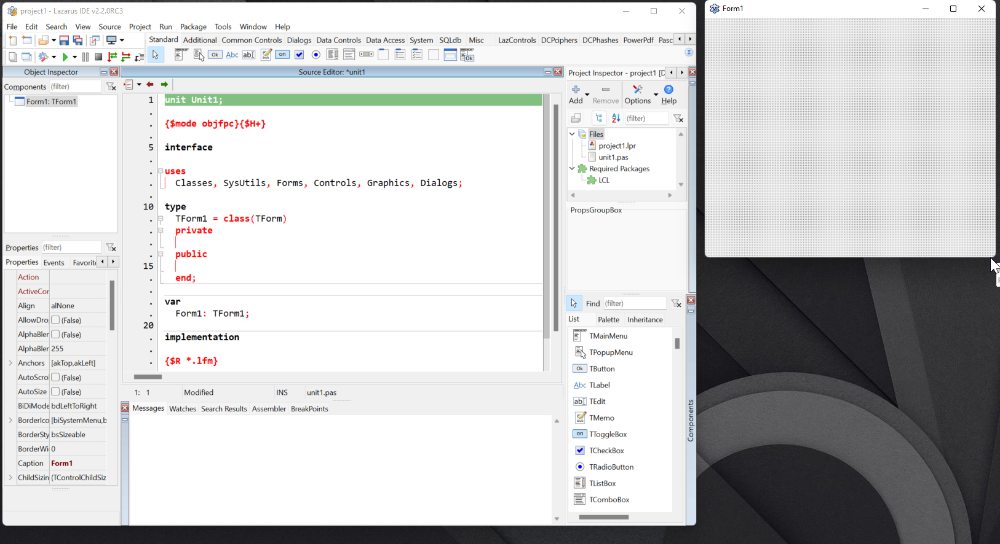
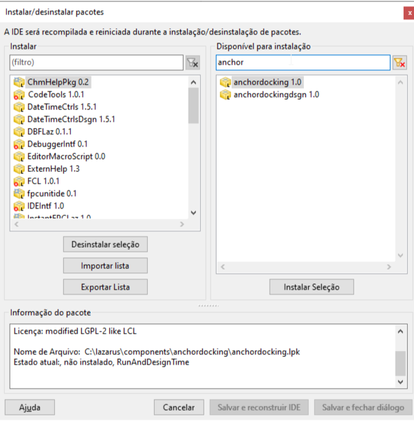

Docagem básica
O padrão do Lazarus é ter janelas vazadas (independentes): o Editor de Propriedades, o Editor de Código e o Explorador de Código ficam flutuando sobre a área de trabalho. Isso pode parecer um pouco desorganizado no início. Se você prefere um ambiente integrado, podemos juntar esses painéis à IDE principal.
Com a docagem básica, o ambiente ficará mais organizado, embora o editor de formulários continue separado dos demais componentes, conforme ilustrado abaixo:

Note que o formulário ainda estará separado (vazado), o que difere um pouco da experiência padrão do Delphi.
Como instalar a Docagem
Se você gostou desse visual, acesse o menu Packages | Install/Uninstall packages (Instalar/desinstalar pacotes) e selecione os seguintes pacotes:
AnchorDockingAnchorDockingDsgn

Após adicionar os pacotes, clique em “Salvar e reconstruir IDE”. O Lazarus será reiniciado e já aparecerá com a nova organização de painéis.
Considerações sobre o Layout
Ter a janela de design de formulário separada do editor de código é excelente para setups com dois ou mais monitores, ou telas 4K e Superwide. No entanto, se você usa apenas um monitor FullHD e está acostumado ao estilo "Delphi-like" (onde o formulário ocupa o mesmo espaço do código e você alterna entre eles com F12), trabalhar com tudo 100% docado pode ser mais produtivo.
Vídeo Demonstrativo
Ainda tem dúvidas sobre o processo? Confira este guia em vídeo: Docagem básica - Lazarus